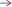

Caffè Mauro
CAFFÈ MAURO 100% ARÁBICA
 Caffé Mauro/(1)Caffè Mauro-1.png)
 Caffé Mauro/caffe-mauro-1.svg)
Refinada y exclusiva, la mezcla de granos de Arábica de Caffè Mauro Centopercento está compuesta por finos cafés arábigos procedentes de plantaciones naturales de café brasileño y lavado de América Central. De sabor dulce y aromático, presenta agradables notas cítricas y aromas florales dulces.
Formato: 1000g
CAFFÈ MAURO DE LUXE
 Caffé Mauro/(1)Caffè Mauro-2.png)
 Caffé Mauro/caffe-mauro-2.svg)
Es una mezcla elegante y aromática. Al degustarlo se evidencia mucho cuerpo y un sabor redondo. Los finos arábicas brasileños naturales aportan notas florales, los centroamericanos lavados dan una agradable acidez frutal equilibrada por el final de cacao típico de los robustas naturales indios.
Formato: 1000g
CAFFÈ MAURO PREMIUM
 Caffé Mauro/(1)Caffè Mauro-3.png)
 Caffé Mauro/caffe-mauro-3.svg)
Una mezcla equilibrada y envolvente. Notas de cacao y especias llenan el paladar, realzando la particularidad de las mejores robustas africanas naturales. La fusión entre la floralidad sudamericana y la brillante acidez frutal típica de las tierras altas de Etiopía completa una taza con una personalidad única.
Formato: 1000g
CAFFÈ MAURO SPECIAL BAR
 Caffé Mauro/(1)Caffè Mauro-4.png)
 Caffé Mauro/caffe-mauro-4.svg)
Mezcla de sabor fuerte, con la dulzura de los arábicas brasileños sobre el fondo de finos robustas del sudeste asiático y africano que le dan cuerpo, floralidad con un agradable final a madera y tabaco.
Formato: 1000g
CAFFÈ MAURO PERÚ ORGÁNICO
 Caffé Mauro/(1)Caffè Mauro-5.png)
 Caffé Mauro/caffe-mauro-5.svg)
Desarrollo solidario, reforestación y protección de la biodiversidad Respect Perù 100% Arábica representa el compromiso de la empresa tostadora Caffè Mauro con el apoyo a los productores, la biodiversidad y la protección del medio ambiente.
Formato: 1000g
Café descafeinado Cialde
Nuestra mezcla descafeinada es un café delicado con notas dulces y afrutadas. Para una taza con mucho cuerpo, con aromas de fruta madura y flores frescas. Es ideal para cualquier momento del día.
CAFFÈ MAURO DESCAFEINADO
 Caffé Mauro/(1)Caffè Mauro-6.png)
Formato caja: 18 compostables
Cápsulas compatibles Nespresso
CAFFÈ MAURO 100% ARÁBICA
 Caffé Mauro/(1)Caffè Mauro-7.png)
Formato caja: 10 cápsulas
CAFFÈ MAURO DE LUXE
 Caffé Mauro/(1)Caffè Mauro-8.png)
Formato caja: 10 cápsulas
PODS Aluminios compatibles Nespresso
Cápsulas Compatibles con máquinas marca Nespresso®
CAFFÈ MAURO 100% ARÁBICA
 Caffé Mauro/(1)Caffè Mauro-9.png)
Formato caja: 50 vainas
CAFFÈ MAURO DE LUXE
 Caffé Mauro/(1)Caffè Mauro-10.png)
Formato caja: 50 vainas
Café molido
CAFFÈ MAURO 100% ARÁBICA
 Caffé Mauro/(1)Caffè Mauro-11.png)
Formato lata: 250 g
CAFFÈ MAURO DE LUXE
 Caffé Mauro/(1)Caffè Mauro-12.png)
Formato lata: 250 g
ver más 